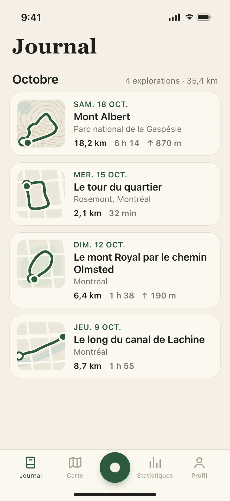
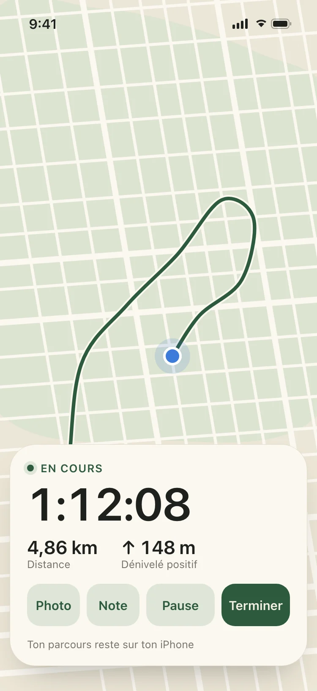
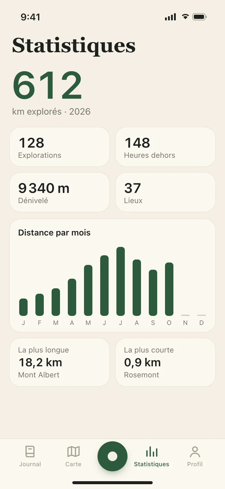
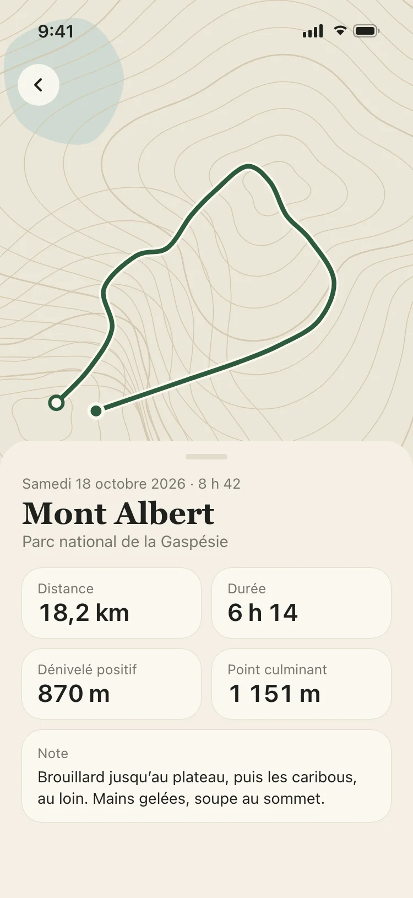
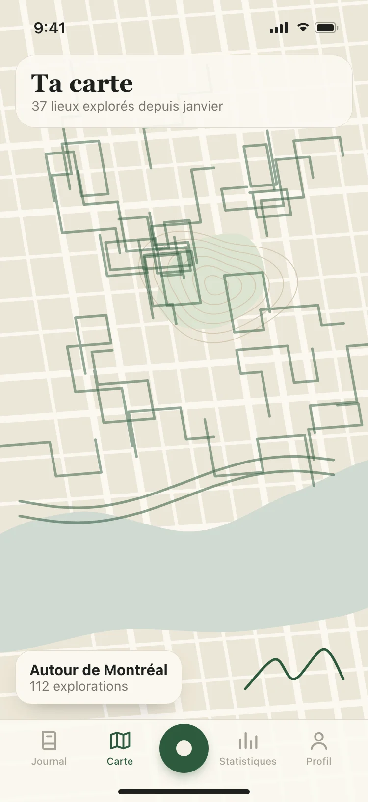

Arpente — Journal de marche et de randonnée
Chaque pas raconte un parcours.
Le journal de tes marches et randonnées pour iPhone : cartes GPS, statistiques claires et l’historique de tes explorations. Gratuite, sans compte, sans pub et sans abonnement.

Tes explorations, jour après jour.
Chaque marche et chaque randonnée arrive dans ton journal avec sa carte, ses chiffres et quelques mots sur la journée.
Lance l’enregistrement d’un toucher.
Touche Enregistrer et glisse ton iPhone dans ta poche. Arpente trace ton parcours au GPS et mesure la distance, la durée et le dénivelé, même écran éteint.

Distance, durée et dénivelé.
Kilomètres explorés, heures dehors et distance par mois. Des statistiques claires, sans rythme à battre.

Chaque parcours sur une belle carte.
Chaque exploration garde sa carte, ses chiffres, une note et les photos de la journée.

Tous les lieux que tu as explorés.
Tous tes parcours sur une seule carte : les rues de ton quartier et les sentiers de tes vacances.

Pas une app de performance. Le journal de tes explorations.
Arpente ne te chronomètre contre personne. Elle garde les marches et les randonnées qui racontent ta vie dehors.
Le tour du quartier
Un mercredi soir · 2,1 km · 32 min · Rosemont, Montréal
Mont Albert
Un samedi d’octobre · 18,2 km · 6 h 14 · ↑ 870 m · Gaspésie
Les deux méritent d’être conservées.
Toutes les fonctionnalités.
Cartes
Chaque parcours sur une belle carte
Un geste
Lance l’enregistrement d’un toucher
Journal
Tes explorations, jour après jour
Statistiques
Distance, durée et dénivelé
Ta carte
Tous les lieux que tu as explorés
Notes
Quelques mots et des photos de la journée
Personnel
Pas de fil, d’abonnés ni de classement
Synchro iCloud
Ton journal dans ton iCloud privé
Export GPX
Tes parcours, dans un format ouvert
Gratuit
Sans compte, sans pub, sans abonnement
Questions fréquentes.
Arpente est-elle gratuite ?
Oui. Arpente est gratuite, sans publicité, sans abonnement et sans compte.
Faut-il un compte ?
Non. Arpente fonctionne sans compte ni inscription. Ton journal est enregistré sur ton iPhone et synchronisé avec ton iCloud privé, auquel nous n’avons pas accès.
Arpente est-elle une app sportive ?
Pas vraiment. Arpente ne te classe pas, ne compare pas ton rythme et ne te pousse pas à aller plus vite. Elle tient le journal des endroits où tu es passé : une marche de 2 km dans ton quartier mérite autant d’être conservée qu’une randonnée de 18 km en montagne.
Qui peut voir mes parcours ?
Toi seulement. Pas de profil public, pas de fil, pas d’abonnés. Tes parcours montrent où tu habites et où tu marches : ils restent sur ton iPhone et dans ton iCloud, et nous ne les recevons jamais.
Comment enregistrer une exploration ?
Touche le bouton d’enregistrement et glisse ton iPhone dans ta poche. Arpente trace ton parcours au GPS et mesure la distance, la durée et le dénivelé. Ajoute une note ou une photo en chemin, puis touche Terminer à ton retour.
Et si je change d’iPhone ?
Ton journal se synchronise avec ton iCloud et revient sur ton nouvel iPhone, avec chaque parcours, chaque note et chaque photo.
Puis-je exporter mes parcours ?
Oui. Chaque parcours s’exporte en fichier GPX, le format ouvert que lisent la plupart des apps de cartes et de randonnée.
Arpente est-elle offerte sur Android ?
Non. Arpente arrive bientôt sur iPhone, en français et en anglais.
D’autres questions ? Visite l’assistance.
Tu aimeras aussi.
- Reliure
L’app gratuite de suivi de lecture pour iPhone
- Porcom
Un petit journal pour tout ce que tu regardes
- Dernier Verre
Un dernier, parfaitement dosé (bientôt)
- Coutume
Tes habitudes, un jour à la fois (bientôt)
Des mêmes créateurs.
- Puuunch
Suivi du temps et feuilles de temps pour petites équipes.
- Makearesu.me
Crée un CV en 5 minutes